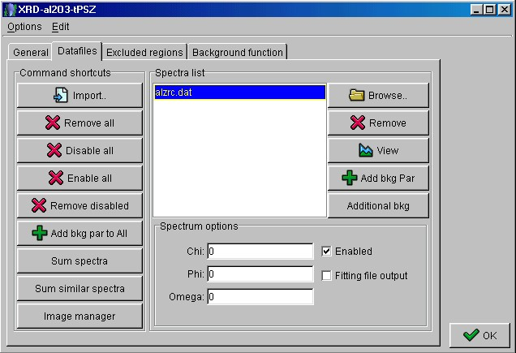
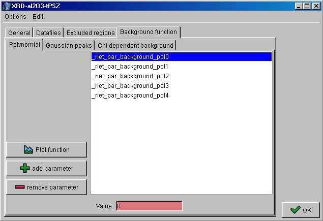

Building the analysis file (step 2)
- Choose the "Datasets" tabPanel.
- If present, remove any dataset.
- Press the 'Add new' button to add a new datafile set. Double-click on it to change the
name at your preference. Then click the 'Edit' button to start preparing your datafile
set.
- The editing window contains four tabPanels: "General", "Datafiles",
"Excluded regions" and "Background function". Click on the
"Datafiles" tabPanel. You have to load your data. Click on the 'Browse' button
and select the file "alzrc.dat" in the "files" folder of MAUD. To have
a look at the spectrum, select it and click on the 'View' button.

Datafiles tabPanel
- Choose the "Background funtion" tabPanel. In the "Polynomial"
tabPanel, select subsequentely the background parameters and set them to zero.

Background tabPanel
- Click on the 'OK'button to exit the main tabPanel.